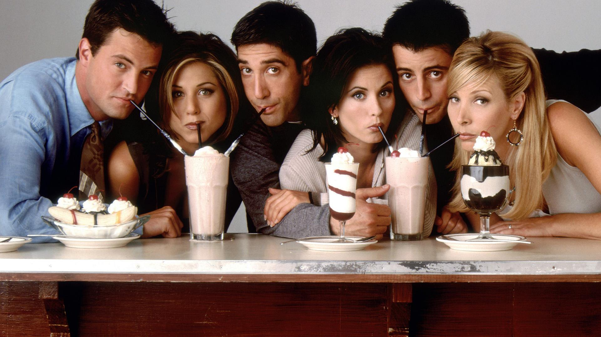

How I Met Your Mother
A father recounts to his children, through a series of flashbacks, the journey he and his four best friends took leading up to him meeting their mother.

Friends
Rachel, Ross, Monica, Joey, Chandler and Phoebe are all friends, living off of one another in New York. Over the course of ten years, this average group of buddies goes through massive mayhem, including laughs and tears as they learn what it really means to be a friend.

The Big Bang Theory
A woman who moves into an apartment across the hall from two brilliant but socially awkward physicists shows them how little they know about life outside of the laboratory.
Game of Thrones
While a civil war brews between several noble families in Westeros, the children of the former rulers of the land attempt to rise to power.